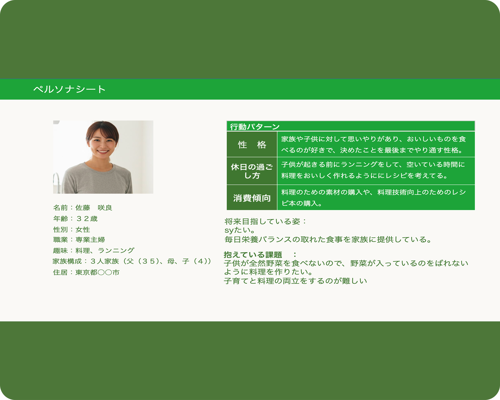
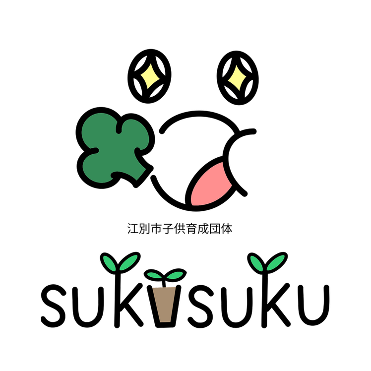
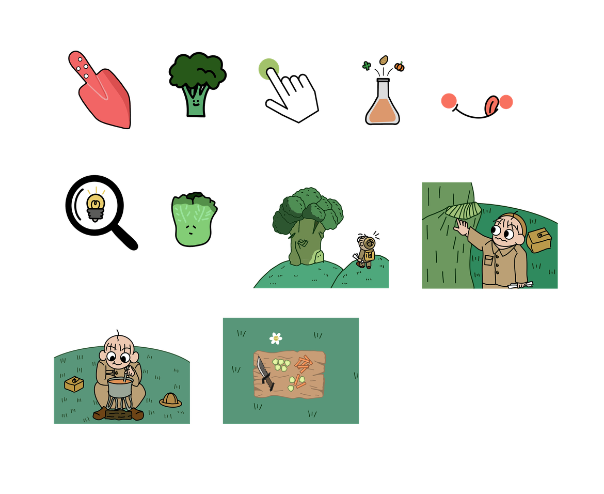
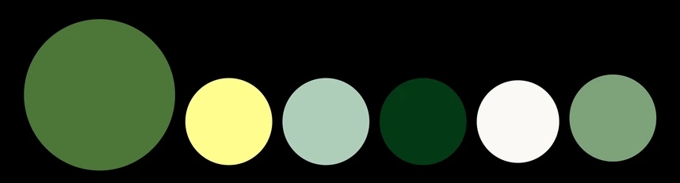
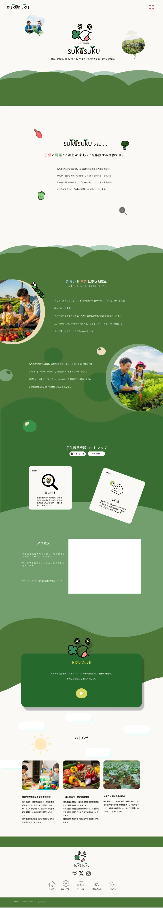

架空サイトすくすく
- #課題制作
- #Webデザイン
授業制作として江別市の居住促進のための架空Webサイト制作をしました。江別市転入アンケート調査結果を元に、江別市の課題として『野菜の特産品の認知度の低さ』と『子育て支援の認知度が低い』ことに焦点を当て、取り組みました。
使っているソフト
Figma
Illustrator
制作期間
7週間
メンバー
デザイナー
プログラマー
ディレクター
担当した役割
デザイナー
プログラマー

Background
江別市の現状調査
- 野菜の特産品の認知が低い
江別市が市外居住者を対象に実施した「特産品の認知度調査」（現在は非公開）によると、「知っている」が3.5%、「やや知っている」が42.7%、「あまり知らない」が25.5%、「知らない」が28.3%という結果になり、市外における江別市特産品の認知度の低さが浮き彫りとなりました。
- 「子育て支援」の認知度が低い
江別市が居住経験なし（市外居住者）を対象に実施した調査によると、「よく知っていた」が0.0%、「やや知っていた」が13.0%、「あまり知らなかった」が30.2%、「知らなかった」が56.8%という結果になり、居住経験がない人における江別市の子育て支援の認知度の低さが浮き彫りとなりました。
ペルソナシート
地方移住のハードルを最も越えやすい「東京都内に暮らす未就学児（4歳）育児中のファミリー層」に着目しました。このターゲット層の悩みを的確に捉えるため、32歳専業主婦の「佐藤咲良」をペルソナとして策定しました。

コンセプト
江別市でみつける、野菜と育つ「のびのび子育て」
このサイトの目的は、江別市の特産品である、新鮮な小麦、ブロッコリー、レタスの「食の魅力」を発見してもらい、地域外のユーザーに訪問のきっかけを与えることができるウェブサイトにすることを目標にしています。ターゲットユーザーとしては、子供を養っている主婦でお子様が野菜を苦手としており、食べてくれない悩みがある方や成長期の時期に「バランスの良い食事」を提供したいという思いがある方に向けて制作しています。
Design
デザインコンセプト
子供も大人も見やすい遊び心のあるデザイン
ロゴデザイン
子供が、野菜苦手を克服することを視覚的に伝えるために、野菜を食べた時の感動した子供の表情をデザインに落とし込みました。

イラスト

落ち着きのあるカラー
江別市の豊かな自然や緑あふれる街並みをダイレクトに表現するため、深みのある「フォレストグリーン」をメインカラーに設定。さらに、温かみのあるイエローや穏やかなセージグリーンなどをサブカラーとして組み合わせることで、自然の優しさと信頼感を両立させた配色に仕上げています。

見やすいフォント
サイト全体のトーンマナーに寄り添うフォントとして「ヒラギノ角ゴ」を使用し、ゆとりのあるカジュアルな雰囲気を出しました。
サイトデザイン
